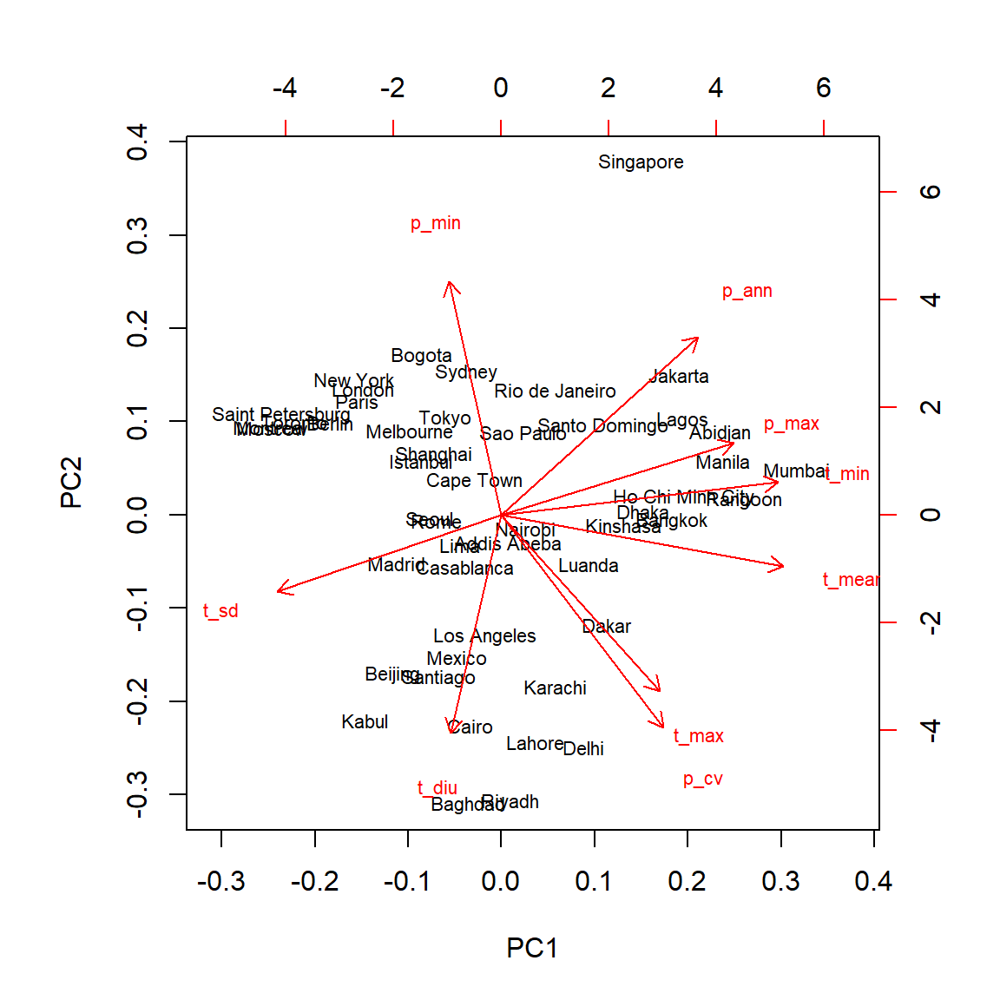
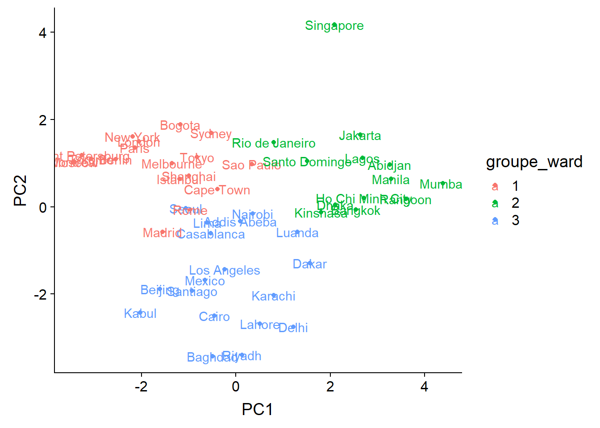

Analyses multivariées, Partie 1
3 décembre 2018
Objectifs
Décrire différents rôles des techniques d’analyse multivariées.
Décrire l’utilité des méthodes d’ordination et de regroupement pour réduire la dimensionalité d’un jeu de données.
Exécuter une analyse en composantes principales (principal component analysis) et pouvoir interpréter les résultats.
Diviser les observations en classes à partir des méthodes de regroupement hiérarchique (hierarchical clustering).
Pourquoi les analyses multivariées?
Les analyses multivariées visent à modéliser la distribution conjointe de plusieurs variables, c’est-à-dire la variation des variables prises individuellement et les corrélations entre elles.
Voici certaines situations où ces méthodes pourraient être utiles:
La réponse qu’on souhaite expliquer est multivariée. Par exemple, la composition d’une communauté écologique est définie comme la présence ou l’abondance de plusieurs espèces à différents sites. Les interactions entre espèces (ex.: compétition) font qu’on ne peut pas étudier cette réponse comme la combinaison de plusieurs réponses univariées indépendantes (une espèce à la fois).
On veut expliquer une réponse univariée en fonction d’un grand nombre de prédicteurs qui sont partiellement corrélés. Par exemple, la présence d’une espèce en fonction des conditions climatiques, la croissance d’arbres de différentes espèces sur un site en fonction de leurs traits fonctionnels, etc. Dans les cours précédents sur la régression, nous avons vu qu’il est difficile d’estimer l’effet d’un grand nombre de prédicteurs potentiellement corrélés dans un même modèle. La sélection de modèles est aussi compliquée lorsque le nombre de prédicteurs est grand.
Dans le cadre d’une analyse exploratoire des données, on pourrait vouloir résumer les différences entre observations (ex.: individus, sites) en fonction de plusieurs variables dans un seul graphique, plutôt qu’avoir à consulter un nuage de points pour chaque paire de variables.
Structure des données multivariées
Supposons que nous réalisons \(n\) observations de \(p\) variables. Nous représentons ces observations par une matrice où \(x_{ij}\) est la valeur de la variable \(j\) pour l’observation \(i\):
\[ \begin{bmatrix} x_{11} & x_{12} & ... & x_{1p} \\ x_{21} & x_{22} & ... & x_{2p} \\ ... & ... & ... & ... \\ x_{n1} & ... & ... & x_{np} \end{bmatrix} \]
Par exemple, prenons le tableau de données cities_climate.csv, qui contient des données climatiques tirées de WorldClim pour 49 grandes villes.
villes <- read.csv("../donnees/cities_climate.csv")
head(villes)## city long lat t_mean t_diu t_sd t_max t_min p_ann p_max p_min
## 1 Tokyo 139.751 35.685 15.6 7.9 7.492 30.7 0.7 1428 185 47
## 2 Shanghai 121.400 31.046 16.2 7.4 8.339 31.6 0.8 1050 167 41
## 3 Mumbai 72.826 18.975 26.8 7.3 1.767 32.7 18.9 2370 827 0
## 4 Karachi 67.082 24.906 25.9 9.9 4.035 34.2 12.0 194 82 0
## 5 Delhi 77.217 28.667 25.1 13.1 6.715 40.5 7.3 734 274 3
## 6 Manila 120.982 14.604 27.3 8.0 1.078 33.8 21.4 2150 466 8
## p_cv
## 1 40
## 2 46
## 3 143
## 4 134
## 5 142
## 6 90Voici la liste des variables climatiques de ce tableau de données:
- t_mean: Température moyenne annuelle.
- t_diu: Variation journalière de température, différence moyenne entre la température maximale et minimale dans un même mois.
- t_sd: Variation saisonnière de température, écart-type de la température moyenne entre les mois.
- t_max: Température maximale du mois le plus chaud.
- t_min: Température minimale du mois le plus froid.
- p_ann: Précipitation annuelle.
- p_max: Précipitation du mois le plus humide.
- p_min: Précipitation du mois le plus sec.
- p_cv: Coefficient de variation (ratio écart-type / moyenne) de la précipitation entre les mois.
Toutes les températures sont en degrés C et toutes les variables de précipitation (sauf le coefficient de variation) sont en mm.
Nous allons extraire les variables climatiques dans un tableau de données séparé, puis ajouter des noms aux rangées (rownames) pour indiquer le nom des villes.
climat <- villes[, 4:12]
rownames(climat) <- villes$cityDans un contexte d’analyse multivariée, nous traiterons nos 49 observations comme des “points” dans un espace à 9 dimensions (une dimension pour chaque variable).
Normalisation des données
Les méthodes d’ordination et de regroupement que nous verrons dans ce cours sont basées sur le concept de distance entre les points dans cet espace multidimensionnel. Toutefois, nous ne pouvons calculer ces distances si les unités diffèrent entre les variables: par exemple, on ne peut pas dire si une variation de température d’un degré C est plus ou moins importante qu’une variation de précipitation d’un mm.
Pour cette raison, nous commençons par normaliser nos données, c’est-à-dire représenter chaque variable sous une forme centrée et réduite. Lorsque appliquée à un tableau de données où toutes les variables sont numériques, la fonction scale transforme chaque variable en soustrayant sa moyenne et en divisant par son écart-type.
clim_norm <- scale(climat)
round(head(clim_norm), 2) # Afficher seulement 2 décimales## t_mean t_diu t_sd t_max t_min p_ann p_max p_min p_cv
## Tokyo -0.44 -0.77 0.91 0.07 -0.62 0.66 -0.06 0.78 -0.74
## Shanghai -0.36 -0.96 1.17 0.24 -0.61 0.08 -0.17 0.58 -0.59
## Mumbai 1.17 -1.00 -0.86 0.46 1.14 2.12 3.86 -0.81 1.84
## Karachi 1.04 0.01 -0.16 0.74 0.47 -1.24 -0.69 -0.81 1.62
## Delhi 0.93 1.24 0.67 1.95 0.02 -0.41 0.48 -0.71 1.82
## Manila 1.25 -0.73 -1.07 0.67 1.39 1.78 1.66 -0.54 0.52Le résultat est une matrice où chaque colonne a une moyenne de 0 et un écart-type de 1. Par exemple, à Tokyo la température moyenne est de 0.44 écart-type sous la moyenne des 49 villes, tandis que la précipitation annuelle est 0.66 écart-type au-dessus de la moyenne des villes.
Note
Vous pouvez vérifier que l’écart-type de chaque colonne est 1 avec la fonction apply:
apply(clim_norm, 2, sd)## t_mean t_diu t_sd t_max t_min p_ann p_max p_min p_cv
## 1 1 1 1 1 1 1 1 1Pour comprendre cette commande, il est plus facile de lire l’instruction à l’envers. La commande apply(clim_norm, 2, sd) dit d’appliquer la fonction écart-type sd à chaque colonne (le chiffre 2 signifie colonne, le chiffre 1 rangée) de la matrice clim_norm.
Il existe des raccourcis dans R pour calculer la somme ou la moyenne des rangées ou des colonnes d’une matrice: rowSums, colSums, rowMeans et colMeans.
Réduction de la dimensionnalité
Il n’est pas possible de visualiser un nuage de points en 9 dimensions. D’un point de vue de l’analyse exploratoire, nous aimerions pouvoir réduire la dimensionnalité de nos données tout en conservant le maximum d’information sur la variation climatique entre les villes. Ce cours vise à offrir une introduction à deux types de méthodes pour effectuer cette réduction
Les méthodes d’ordination effectuent une transformation des \(p\) variables originales en un nombre plus restreint de nouvelles variables, de façon à ce que la représentation des points dans l’espace réduit (souvent, en 2 dimensions) reproduise le plus fidèlement possible les distances entre les points dans l’espace original en \(p\) dimensions. Ces méthodes ordonnent les observations selon les axes de variation les plus importants, d’où leur nom. L’analyse en composantes principales présentée ci-dessous est un exemple de méthode d’ordination.
Si l’ordination vise à représenter les variables numériques originales par un nombre réduit de variables numériques transformées, les méthodes de regroupement (clustering) tentent plutôt de diviser les observations en un nombre discret de groupes (ou catégories) en fonction de leur proximité dans l’espace à \(p\) dimensions. La méthode de regroupement vue dans ce cours est la classification hiérarchique ascendante (agglomerative hierarchical clustering).
Analyse en composantes principales
Introduction
Voici un nuage de points représentant trois des variables climatiques des 49 villes: la température moyenne, l’écart-type de la température et la précipitation annuelle.
La position des points sur l’écran représente la projection du nuage en trois dimensions sur un graphique en deux dimensions. En faisant la rotation du graphique, cette projection change même si la valeur des points demeure la même pour les trois variables. Certaines rotations permettent de mieux différencier les points que d’autres, même si aucune ne reproduit parfaitement les distances entre tous les points. Mathématiquement, ces rotations sont une transformation des variables originales en un nouvel espace en trois dimensions composé de la largeur, de la hauteur et de la profondeur de l’écran; la variation selon cette troisième dimension (profondeur) est bien sûr cachée dans la visualisation.
Considérons le cas extrême où l’on a trois variables \(x\), \(y\) et \(z\) et qu’une d’entre elles est parfaitement prédite par les deux autres (collinéarité parfaite), par exemple \(z = 2x - 5y\). L’ensemble des points est situé sur un seul plan, mais les axes de ce plan correspondent à une combinaison linéaire des variables originales. Une rotation permettrait d’aligner ce plan avec les deux premières dimensions de la visualisation (largeur et hauteur). Dans ce cas, puisque les données ne varient pas dans la troisième dimension, la projection représente parfaitement la variation des données originales.
Il est rare que des variables soient parfaitement collinéaires, donc la réduction de la dimensionnalité sera toujours associée à une perte d’information; le but de l’ordination est de choisir judicieusement les nouveaux axes afin de minimiser la variation des données dans les dimensions qui seront éliminées, ou de façon équivalente, maximiser la variation “expliquée” par les axes retenus.
Fonctionnement de l’analyse en composantes principales
Prenons un jeu de données multivariées \(X\), soit une matrice de \(n\) observations de \(p\) variables et supposons que ces variables aient été préalablement normalisées. L’analyse en composantes principales (ACP) est une transformation linéaire de la matrice \(X\) (équivalente à une rotation en \(p\) dimensions) déterminée de la manière suivante:
- le premier axe (première nouvelle variable) est choisi de façon à maximiser la variance des données le long de cet axe;
- le deuxième axe est choisi de façon à maximiser la variance des données à condition d’être orthogonal (perpendiculaire) au premier axe;
- le troisème axe est choisi de façon à maximiser la variance des données à condition d’être orthogonal aux deux précédents;
- et ainsi de suite.
Les variables transformées, ou composantes principales, obtenues par l’ACP ont donc la propriété d’être orthognales les unes aux autres (ce qui signifie en particulier que leur corrélation est de 0) et d’être classées en ordre décroissant de variance expliquée.
Mathématiquement, l’ACP requiert le calcul des valeurs propres et les vecteurs propres de la matrice de covariance de \(X\), \(C_X\). Un élément de cette matrice, \(C_{X ~ i,j}\), correspond à la covariance entre les colonnes (variables) \(i\) et \(j\) de \(X\). Les vecteurs propres indiquent la direction des composantes principales tandis que les valeurs propres indiquent la variance des données selon chaque composante principale.
Le développement de l’ACP est basé sur la théorie des distributions normales multivariées et la méthode s’applique mieux lorsque les variables s’approchent de la normalité. En pratique, il suffit de transformer les variables très asymétriques afin d’éviter que certaines valeurs extrêmes n’aient une influence trop grande sur l’analyse.
Nous verrons au prochain cours des méthodes d’ordination adaptées aux données de présence-absence et d’abondance communes en écologie.
ACP avec R
Il existe plusieurs fonctions pour effectuer une ACP dans R. Dans ce cours, nous utiliserons la fonction prcomp.
Note: Si on n’avait pas normalisé les variables au préalable, nous pouvons le faire directement dans la fonction prcomp avec l’argument scale. = TRUE.
clim_acp <- prcomp(clim_norm)
summary(clim_acp)## Importance of components:
## PC1 PC2 PC3 PC4 PC5 PC6
## Standard deviation 1.9785 1.5741 0.9774 0.90767 0.75003 0.46655
## Proportion of Variance 0.4349 0.2753 0.1061 0.09154 0.06251 0.02418
## Cumulative Proportion 0.4349 0.7102 0.8164 0.90792 0.97042 0.99461
## PC7 PC8 PC9
## Standard deviation 0.20003 0.08141 0.04355
## Proportion of Variance 0.00445 0.00074 0.00021
## Cumulative Proportion 0.99905 0.99979 1.00000Le sommaire du résultat de l’ACP indique d’abord l’écart-type de chacune des 9 composantes principales (rotation des variables originales). Ces valeurs sont aussi enregistrées dans l’élément sdev du résultat (clim_acp$sdev). Les deux rangées suivantes indiquent le rapport entre la variance d’une composante et la variance totale (somme des variances des 9 variables), puis la proportion cumulative.
Les variances associées à chaque composante principale peuvent être visualiées avec la fonction screeplot.
screeplot(clim_acp)
La transformation entre les variables originales (normalisées) et les composantes principales est donnée par l’élément rotation.
round(clim_acp$rotation, 2)## PC1 PC2 PC3 PC4 PC5 PC6 PC7 PC8 PC9
## t_mean 0.47 -0.11 0.11 -0.27 0.19 -0.01 0.08 0.80 0.03
## t_diu -0.09 -0.46 0.05 -0.35 -0.78 0.06 -0.06 0.07 -0.19
## t_sd -0.38 -0.16 -0.58 -0.08 0.30 0.00 -0.01 0.20 -0.60
## t_max 0.27 -0.37 -0.33 -0.51 0.30 0.21 -0.06 -0.41 0.34
## t_min 0.46 0.07 0.36 -0.12 0.13 0.03 -0.18 -0.34 -0.69
## p_ann 0.33 0.37 -0.39 -0.01 -0.29 0.24 0.66 -0.08 -0.11
## p_max 0.39 0.15 -0.48 0.30 -0.25 0.00 -0.66 0.08 0.06
## p_min -0.09 0.49 -0.09 -0.57 -0.08 -0.63 -0.10 -0.04 0.04
## p_cv 0.27 -0.45 -0.13 0.33 0.00 -0.71 0.29 -0.14 -0.02Par exemple, la première colonne de cette matrice nous indique que la composante principale est calculée par l’équation:
\[ PC1 = 0.47 T_{mean} - 0.09 T_{diu} - 0.38 T_{sd} + 0.27 T_{max} + 0.46 T_{min} + 0.33 P_{ann} + 0.39 P_{max} - 0.09 P_{min} + 0.27 P_{cv} \]
Puisque les variables ont été normalisées au préalable, la magnitude de ces coefficients indique l’importance de l’association entre une variable et la composante principale donnée, alors que le signe indique la direction de cette association. Dans ce cas-ci:
la première composante principale est associée entre autres à une température moyenne et une température minimale élevées;
la deuxième composante est d’abord associée à une précipitation minimale élevée, à une faible variation journalière et à une faible variation de la précipitation.
Inversement, les rangées de la matrice rotation indiquent comment une augmentation unitaire de chaque variable originale est “décomposée” sur les différents axes des composantes principales.
L’élément x du résultat donne quand à lui les coordonnées de chaque observation sur les axes des composantes principales:
round(head(clim_acp$x), 2)## PC1 PC2 PC3 PC4 PC5 PC6 PC7 PC8 PC9
## Tokyo -0.83 1.14 -1.07 -0.37 0.48 0.15 0.29 -0.03 0.01
## Shanghai -1.00 0.71 -1.00 -0.30 0.99 0.05 0.04 0.03 -0.01
## Mumbai 4.39 0.53 -2.00 1.97 -0.49 -0.24 -0.58 0.04 0.00
## Karachi 0.80 -2.03 0.81 0.09 1.04 -0.78 0.14 0.20 0.08
## Delhi 1.22 -2.75 -1.11 -0.58 0.05 -0.48 -0.12 0.01 0.06
## Manila 3.30 0.64 -0.51 0.48 -0.02 0.52 0.17 -0.08 -0.06Visualisation de l’ACP
Dans la section précédente, nous avons vu que chaque observation est associée à des coordonnées sur les 9 axes de composantes principales. Nous avons aussi vu qu’une augmentation unitaire d’une des variables originales est associée à une variation sur chacun des axes.
Le diagramme de double projection, ou biplot, permet de visualiser simultanément les coordonnées des observations et les vecteurs correspondant aux variables originales dans l’espace des composantes principales. Ce diagramme montre généralement les deux premières composantes qui comptent pour la plus grande partie de la variance totale.
biplot(clim_acp)
Le diagramme peut nous aider à interpréter les composantes principales. Par exemple:
- Les villes au climat le plus froid (ex.: Saint-Pétersbourg, Montréal) sont concentrées à gauche du graphique, un peu en haut de la médiane, à l’opposé des vecteurs associés à une température minimale, moyenne et maximale plus élevée.
Les villes situées à droite (ex.: Mumbai, Manille) sont caractérisées par des températures élevées toute l’année (
t_minélevée) et beaucoup de précipitation lors du mois le plus humide (p_maxélevée).La ville de Singapour est placée à part des autres, notamment en raison de ses fortes pluies toute l’année (
p_annetp_minélevées).Les villes en bas du graphique ont une température maximale élevée, au moins une saison très aride (
p_minfaible) et une grande variation de température journalière.
Puisque les deux premières composantes n’expliquent que 70% de la variance totale, il faut s’attendre à ce qu’elles ne représentent pas parfaitement la “distance” climatique entre les villes. Par exemple, la ville avec les précipitations annuelles les plus faibles (Lima) se trouve au centre du graphique plutôt qu’à proximité des autres climats arides; cela est dû au fait que les variations de température sont moins prononcées dans cette ville.
L’argument choices de biplot permet de visualiser d’autres composantes que les deux premières.
biplot(clim_acp, choices = c(1, 3))
Pour interpréter la troisième composante principale, nous pouvons nous concentrer sur les deux villes situées aux extrêmes: Séoul et Lima se retrouvaient toutes deux près du centre du graphique des composantes 1 et 2. Dans ce graphique-là, la variation de température (t_sd) et la quantité de précipitation (p_ann et p_max) pointaient dans des directions opposées, parce que généralement, la température varie moins dans les villes avec des précipitations plus abondantes. Sur la troisième composante principale, ces deux variables sont associées à des valeurs négatives, donc cette composante permet de contraster les villes avec de fortes précipitations et une grande variation de température (Séoul) des villes avec de faibles précipitation et une faible variation de température (Lima).
Combien de composantes principales choisir?
Différents critères ont été proposés pour déterminer combien de composantes principales suffisent à décrire des données muiltivariées. Autrement dit, quelles composantes principales comptent pour une portion suffisamment importante de la variance totale?
Voici les variances (carré des écarts-types) associées aux composantes principales dans notre exemple:
clim_acp$sdev^2## [1] 3.914417064 2.477765395 0.955214474 0.823859308 0.562545790 0.217664459
## [7] 0.040010038 0.006626862 0.001896610Pour des données normalisées, la somme des variances est toujours égale au nombre de variables (ici, 9) et la moyenne des variances est donc de 1. Un des critères les plus simples propose donc de conserver les composantes avec une variance supérieure à 1. Toutefois, si l’ensemble des variances sont proches de 1, cela signifierait que les variables originales sont presque indépendantes, donc que l’ACP n’est pas très utile.
D’autres critères sont basés sur des tests statistiques plus précis, tels que ceux évalués dans l’article de Peres-Neto et al. (2005)
En pratique, des tests d’hypothèse formels sont rarement nécessaires. Pour une analyse de données exploratoire, on visualise toujours les deux premières composantes, puis on peut inspecter les suivantes si elles contribuent à une portion jugée non négligeable de la variance et qu’elles sont facilement interprétables. Pour l’utilisation des composantes principales dans une régression (voir ci-dessous), les méthodes de sélection de modèles peuvent nous guider sur le nombre de composantes principales à conserver dans la régression elle-même.
ACP et régression
Tel que mentionné plus haut, il est difficile d’estimer les paramètres d’une régression si les prédicteurs potentiels sont nombreux et corrélés. En transformant ces prédicteurs en un nombre plus réduit de variables non-corrélées, l’ACP peut résoudre ces deux problèmes.
Le principal inconvénient à cette approche (ACP suivie d’une régression en fonction des composantes principales) est que les effets sont généralement plus difficiles à interpréter en fonction des variables originales, surtout si plusieurs variables contribuent de façon substantielle à chaque axe.
Dans certaines études, le but principal est de prédire la réponse et on s’intéresse peu à l’effet des prédicteurs individuels. Par exemple, considérons un projet visant à identifier les espèces dominantes d’une forêt à partir d’images de télédétection hyperspectrales contenant des données de réflectance pour des centaines de longueurs d’onde. Dans ce cas, les méthodes multivariées comme l’ACP sont utilisées pour réduire ce spectre de réflectance en un plus petit nombre de composantes orthogonales.
Classification hiérarchique ascendante
La classification hiérarchique ascendante vise à créer des groupes d’observations semblables selon une série de variables. Ce nom vient du fait qu’on commence avec les observations individuelles, qui sont regroupées progressivement jusqu’à ce qu’on obtienne un seul groupe. La structure résultante est un arbre ou dendrogramme montrant les relations de proximité pour l’ensemble des observations.
Matrice de distance
L’algorithme de classification hiérarchique requiert une matrice de la distance \(d_{ij}\) pour chaque paire d’observations \(i\) et \(j\).
\[ \begin{bmatrix} 0 \\ d_{21} & 0 \\ d_{31} & d_{32} & 0 \\ ... \\ d_{n1} & d_{n2} & ... & d_{n(n-1)} & 0 \end{bmatrix} \]
Il s’agit d’une matrice \(n \times n\) où toutes les valeurs diagonales sont zéro (chaque observation est à une distance 0 d’elle-même). Puisque la matrice est symétrique (\(d_{ji}\) = \(d_{ij}\)), on peut omettre les valeurs du triangle supérieur dans la représentation.
Pour des variables numériques, la distance la plus couramment utilisée est la distance euclidienne, calculée ainsi:
\[ d_{ij} = \sqrt{\sum_{k = 1}^p (x_{ik} - x_{jk})^2} \]
En deux dimensions et avec les variables \(x\) et \(y\) au lieu de \(x_1\) et \(x_2\), cette formule se simplifie à:
\[ d_{ij} = \sqrt{(x_i - x_j)^2 + (y_i - y_j)^2} \]
Il s’agit de la distance en ligne droite entre les deux points calculées à partir du théorème de Pythagore. La fonction ci-dessus est donc la généralisation de cette distance à \(p\) dimensions.
Dans R, la fonction dist calcule la matrice de distance entre les rangées d’une matrice de données numériques. Cette fonction utilise la distance euclidienne par défaut.
Comme dans le cas de l’ACP, il est recommandé de normaliser les variables avant de calculer la matrice de distance, afin de les placer sur une échelle comparable.
Algorithme de classification hiérarchique ascendante
Supposons qu’on ait la matrice de distance suivante entre 4 observations.
\[ \begin{array} && A & B & C \\ B & 11 \\ C & 13 & 6 \\ D & 7 & 11 & 9 \end{array} \]
L’algorithme regroupe d’abord les deux observations les plus rapprochées, soit B et C (distance de 6).
Ensuite, il remplace B et C par une observation BC et calcule la distance entre ce groupe et chacune des autres observations existantes.
Comment détermine-t-on la distance du nouveau groupe à partir des distances précédentes? Différentes règles sont possibles. Pour l’instant, utilisons une règle où la distance d’un nouveau groupe à une observation existante est la moyenne des distances entre chaque membre du groupe et l’observation.
\[ \begin{array} & & A & BC \\ BC & 12 & \\ D & 7 & 10 \end{array} \]
- À partir de ce moment, le nouveau groupe (BC) est traité comme une observation individuelle. Il suffit ensuite de répéter les étapes 1 et 2 jusqu’à ce qu’il n’y ait que deux groupes, qui sont joints à la dernière étape.
Dans l’exemple, la prochaine étape serait de regrouper A et D (distance de 7). Finalement, on joint AD et BC à une distance de 11 (moyenne de 10 et 12).
Classification hiérarchique avec R
La fonction hclust permet d’effectuer une classification hiérarchique ascendante. Voici la classification pour le tableau de 9 variables climatiques pour 49 grandes villes. Nous calculons d’abord la matrice de distance, puis effectuons le regroupement avec la méthode “average” (les différentes méthodes seront présentées plus loin).
clim_dist <- dist(clim_norm)
clim_ch <- hclust(clim_dist, method = "average")
plot(clim_ch)
Les “feuilles” au bas du dendrogramme correspondent aux observations individuelles. Une ligne horizontale représente le regroupement de deux observations ou groupes existants. L’échelle à gauche du dendrogramme (Height) indique la distance correspondant à chaque regroupement. Plus la distance augmente, plus le nombre de groupes diminue et la taille des groupes augmentent.
L’argument method indique comment calculer la distance entre groupes:
saut minimum (
method = "single"): la distance entre deux groupes A et B correspond à la distance minimale entre une observation dans A et une observation dans B.saut maximum (
method = "complete"): la distance entre A et B correspond à la distance maximale entre une observation dans A et une observation dans B.lien moyen (
method = "average"): la distance entre A et B correspond à la moyenne des distances sur l’ensemble des paires d’observations dont une est dans A et une dans B (il s’agit de la méthode illustrée dans l’exemple précédent).la critère de Ward (
method = "ward.D2") consiste à effectuer le regroupement qui minimise l’augmentation de la variance totale intra-groupe.
Contrastons d’abord les résultats du saut minimum et du saut maximum:
clim_ch_min <- hclust(clim_dist, method = "single")
plot(clim_ch_min)
clim_ch_max <- hclust(clim_dist, method = "complete")
plot(clim_ch_max)
Pour le critère du saut minimum, plus un groupe contient d’observations, plus il se rapproche potentiellement des autres groupes et observations individuelles, puisque la distance est basée sur l’observation la plus proche parmi toutes celles du groupe. C’est pourquoi cette méthode a tendance a créer des grands groupes auxquelles les observations se joignent une à la fois. La situation inverse se produit pour le saut maximum: plus un groupe est grand, plus il s’éloigne potentiellement des autres groupes et observations. C’est pourquoi cette méthode a tendance à créer des petits groupes d’abord avant de faire grandir les plus grands groupes. Le lien moyen est un compromis entre ces deux extrêmes.
La méthode de Ward est différente puisqu’il s’agit de minimiser la variance entre observations d’un même groupe. Toutefois, puisque l’ajout d’une seule observation éloignée des autres risque d’avoir un grand effet sur la variance, cette méthode tend comme celle du saut maximum à privilégier des plus petits groupes initialement. Ces deux méthodes permettent donc de créer des groupes plus compacts et équilibrés.
clim_ch_ward <- hclust(clim_dist, method = "ward.D2")
plot(clim_ch_ward)
Extraire des groupes d’une classification hiérarchique
La classification hiérarchique définit un nombre différent de groupes le long du dendrogramme. La fonction cutree permet de “couper” le dendrogramme (1) à une certaine hauteur en spécifiant l’argument h ou (2) pour obtenir un certain nombre de groupes en spécifiant l’argument k. Cette fonction renvoie un vecteur indiquant l’indice du groupe correspondant à chaque observation, dans le même ordre que la matrice de données.
Utilisons donc cette méthode pour extraire les trois grands groupes du dernier dendrogramme (critère de Ward):
groupes <- cutree(clim_ch_ward, k = 3)
head(groupes)## Tokyo Shanghai Mumbai Karachi Delhi Manila
## 1 1 2 3 3 2Comparer les groupes à l’ordination
Nous allons finalement représenter les groupes obtenus par classification hiérarchique sur le graphique des deux premiers axes de l’ACP. Tout d’abord, nous créons un nouveau tableau en rattachant les deux premières composantes principales et le vecteur des indices de groupes, qui doit être spécifié comme facteur.
ord_groupes <- data.frame(clim_acp$x[, 1:2], groupe_ward = as.factor(groupes))
head(ord_groupes)## PC1 PC2 groupe_ward
## Tokyo -0.8292567 1.1390831 1
## Shanghai -0.9964678 0.7094018 1
## Mumbai 4.3904533 0.5328498 2
## Karachi 0.8027417 -2.0305728 3
## Delhi 1.2169313 -2.7525580 3
## Manila 3.2953893 0.6395510 2ggplot(ord_groupes, aes(x = PC1, y = PC2, color = groupe_ward)) +
geom_point() +
geom_text(aes(label = rownames(ord_groupes)))
Comparons maintenant avec quatre groupes extraits avec la méthode du saut maximum:
ord_groupes$groupe_max <- as.factor(cutree(clim_ch_max, k = 4))
ggplot(ord_groupes, aes(x = PC1, y = PC2, color = groupe_max)) +
geom_point() +
geom_text(aes(label = rownames(ord_groupes)))
Outre la décision de placer Singapour dans un groupe à part ou non, les différences entre les deux méthodes se retrouvent surtout aux endroits où les groupes se chevauchent. D’après le graphique, il est assez clair que la distribution des villes le long des axes climatiques est graduelle plutôt que de former quelques groupes bien séparés. Dans ce cas, l’ordination constitue une meilleure façon de condenser l’information sur les différences entre les climats des différentes villes.
Résumé
Les analyses multivariées servent à décrire et expliquer la distribution conjointe de plusieurs variables.
Lorsque les variables représentent différentes unités, il est important de les normaliser afin d’obtenir des échelles comparables pour les analyses multivariées.
L’ordination vise à produire dans un nombre de dimensions réduit (souvent 2) la représentation la plus fidèle possible de la variation entre les observations multivariées.
L’analyse en composantes principales (ACP) est une méthode d’ordination qui effectue une transformation linéaire (rotation) des variables originales, afin d’obtenir des composantes principales qui sont non-corrélées et classées en ordre décroissant de variance. Les coordonnées des observations et les variables originales peut être représentées simultanément dans l’espace des composantes principales (diagramme de double projection).
Les méthodes de regroupement visent à classer les observations multivariées dans un petit nombre de groupes d’observations les plus similaires possibles. La classification hiérarchique ascendante effectue un regroupement graduel à partir des observations individuelles et en fonction de différentes règles qui définissent la distance entre groupes. Cette classification produit un dendrogramme.
Références
Manuels
Manly, B.F. et Alberto, J.A.N. (2016) Multivariate statistical methods: a primer. Chapman and Hall/CRC.
Legendre, P. et Legendre, L. (2012) Numerical Ecology, 3e éd. Elsevier.
Borcard, D., Gillet, F. et Legendre, P. (2018) Numerical Ecology with R, 2e éd. Springer.
Web
- Cours de François Husson sur l’analyse en composantes principales et les méthodes de regroupement.
Sur les critères pour choisir un nombre de composantes principales:
- Peres-Neto, P.R., Jackson, D.A. et Somers, K.M. (2005) “How many principal components? stopping rules for determining the number of non-trivial axes revisited.” Computational Statistics and Data Analysis 49: 974-997.